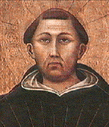

|  |
|---|
[69293] Super Decretales, n. 1 Salvator noster discipulos ad praedicandum mittens, tria eis iniunxit. Primo quidem ut docerent fidem; secundo ut credentes imbuerent sacramentis; tertio ut credentes sacramentis imbutos ad observandum divina mandata inducerent. Dicitur enim Matth. ult. 19: euntes, docete omnes gentes, quantum ad primum; baptizantes eos in nomine patris et filii et spiritus sancti, quantum ad secundum; docentes eos servare omnia quaecumque mandavi vobis, quantum ad tertium. Inter quae tria decenter fidei doctrina praemittitur. Est enim fides omnium bonorum spiritualium fundamentum, secundum illud apostoli Hebr. XI, 1: est autem fides substantia (idest fundamentum) sperandarum rerum. Est etiam fides per quam anima vivificatur per gratiam, secundum illud apostoli Galat. II, 20: quod autem nunc vivo in carne, in fide vivo filii Dei; et Habac. II, 4: iustus autem ex fide sua vivit. Ipsa est per quam anima a peccatis purgatur, Act. XV, 9: fide purificans corda eorum. Ipsa est per quam anima iustitia ornatur, Rom. III, 22: iustitia autem Dei est per fidem Iesu Christi. Ipsa est per quam anima Deo desponsatur, Oseae II, 20: sponsabo te mihi in fide. Ipsa est per quam homines in Dei filios adoptantur, Ioan. I, 12: dedit eis potestatem filios Dei fieri, his qui credunt in nomine eius. Ipsa est per quam ad Deum acceditur, Hebr. XI, 6: accedentem ad Deum oportet credere. Ipsa denique est per quam homines aeternae vitae bravium consequuntur, secundum illud Ioan. VI, 40: haec est voluntas patris mei qui misit me, ut omnis qui videt filium et credit in eum, habeat vitam aeternam. Convenienter igitur Christi vicarius propositurus mandata quibus Ecclesia per apostolorum praedicationem fundata pacifice gubernatur, titulum de fide praemittit. Sed considerandum est, quod cum multi sint articuli fidei, quorum quidam videntur ad ipsam divinitatem pertinere, quidam vero ad humanam naturam, quam filius Dei in unitatem personae assumpsit, alii vero ad divinitatis effectus, fundamentum tamen totius fidei est ipsa prima veritas divinitatis, cum omnia alia ea ratione contineantur sub fide, inquantum ad Deum aliqualiter referuntur. Unde et dominus discipulis dicit Ioan. XIV, 1: creditis in Deum et in me credite; per quod datur intelligi quod in Christum creditur inquantum est Deus, quasi fide principaliter de Deo existente. Inter ea vero quae de Deo fide tenemus, hoc est singulare fidei Christianae ut Trinitatem personarum in unitate divinae essentiae fateamur. Sub hac enim professione Christo per Baptismum sumus consignati, ut patet per id quod supra inductum est: baptizantes eos in nomine patris et filii et spiritus sancti. Alia vero quae de Deo asserimus, nobis et aliis communia esse inveniuntur; puta, quod Deus sit unus, omnipotens, et si qua alia de Deo fide tenentur; quae etiam Iudaei et Saraceni non diffitentur. Unde ad insinuandum proprium et singulare dogma fidei Christianae, non praetitulavit fidei tractatum de Deo, sed de Trinitate. Addit autem, summa, quia divina Trinitas arcem quandam tenet inter plurimas Trinitates ab ea derivatas. Derivatur enim ab illa Trinitate divina quaedam Trinitas in anima nostra, secundum quam ad imaginem Dei sumus secundum memoriam, intelligentiam et voluntatem. Derivantur etiam ab ipsa aliae Trinitates in singulis creaturis, prout modum quendam et speciem et ordinem habent secundum quae in eis divinae Trinitatis quasi quoddam vestigium invenitur, ut Augustinus docet in libro de Trinitate. Ad discretionem igitur omnium harum Trinitatum quae a divina descendunt, dicitur de summa Trinitate. Sed de hac Trinitate divina diversi haeretici diversa errantes senserunt: quorum Sabellius abstulit personarum distinctionem dicens patris et filii et spiritus sancti esse unam essentiam et unam personam, sed solum differre nominibus; Arius vero posuit trium personarum esse diversas substantias, et dignitate et duratione differentes: quae omnia et consimilia fides condemnat Catholica. Quia igitur de summa Trinitate et aliis ad fidem pertinentibus hic tradere intendit quod fides Catholica tenet, ideo additur, et fide Catholica. Dicitur autem fides Ecclesiae Catholica, idest universalis, ut Boetius dicit in libro de Trinitate, tum propter universalium praecepta regularum, tum propterea quia eius cultus per omnes pene mundi terminos emanavit; haereticorum vero errores sub certis terrarum angulis includuntur. Quia de fide sanctae Trinitatis considerandum est, primo oportet scire, quod duplex est actus fidei, scilicet corde credere et ore confiteri, secundum illud Rom. X, 10: corde creditur ad iustitiam, ore autem confessio fit ad salutem. Uterque autem actus aliquid requirit ad sui perfectionem. Nam interior actus fidei exigit firmitatem absque omni dubitatione, quae firmitas provenit ex infallibilitate divinae veritatis, cui fides innititur; unde dicitur Iac. I, 6: postulet autem in fide nihil haesitans. Sed confessio fidei debet esse simplex, idest absque simulatione, secundum illud I ad Timoth. I, 5: finis praecepti est caritas de corde puro et conscientia bona et fide non ficta. Debet etiam esse simplex, idest absque erroris permixtione, secundum illud I ad Thessal. II, 3: exhortatio nostra non fuit de errore. Debet etiam esse absque variatione, II ad Cor. I, 18: sermo noster qui fuit apud vos, non fuit in illo est et non. Quantum ergo ad primum dicit, firmiter credimus; quantum ad secundum et simpliciter confitemur. Ulterius autem considerandum est quod fidei Christianae articuli a quibusdam duodecim, a quibusdam quatuordecim computantur. Secundum enim illos qui computant quatuordecim, septem articuli pertinent ad divinitatem, septem vero ad humanitatem. Illi autem qui ad divinitatem pertinent, sic distinguuntur, ut unus sit articulus de divinae essentiae unitate, qui tangitur in symbolo cum dicitur: credo in unum Deum. Secundus est de persona patris, qui tangitur cum dicitur: patrem omnipotentem. Tertius est de persona filii qui tangitur cum dicitur: et in Iesum Christum filium eius. Quartus est de persona spiritus sancti, qui tangitur cum dicitur: et in spiritum sanctum. Quintus est de effectu, quo a Deo creamur in esse naturae, qui tangitur cum dicitur: creatorem caeli et terrae. Sextus de effectu Dei secundum quod recreamur in esse gratiae, qui tangitur cum dicitur: sanctam Ecclesiam Catholicam, sanctorum communionem, remissionem peccatorum. Quia per gratiam Dei in unitatem Ecclesiae congregamur, sacramenta communicamus et peccatorum remissionem consequimur. Septimus articulus est de effectu Dei quo perficimur in esse gloriae et quantum ad corpus et quantum ad animam; et hic tangitur cum dicitur: carnis resurrectionem, vitam aeternam. Articuli vero septem ad incarnationem pertinentes sic distinguuntur, ut primus sit de Christi conceptione, qui tangitur cum dicitur: qui conceptus est de spiritu sancto. Secundus autem est de eius nativitate, qui tangitur cum dicitur: natus ex Maria virgine. Tertius est de eius passione, qui tangitur cum dicitur: passus, mortuus et sepultus. Quartus est de descensu ad Inferos: quintus de resurrectione: sextus de ascensione: ascendit ad caelos. Septimus de adventu ad iudicium: inde venturus est iudicare vivos et mortuos. Alii vero ponentes duodecim articulos, ponunt unum articulum de tribus personis; et articulum de effectu gloriae dividunt in duos, ut scilicet alius sit articulus de resurrectione carnis, et alius de vita aeterna: et sic articuli ad divinitatem pertinentes sunt sex. Item conceptionem et nativitatem Christi sub uno articulo comprehendunt; et sic etiam articuli de humanitate sunt sex: unde omnes sunt duodecim. Primo igitur prosequitur articulum primum de essentiae unitate; unde primo ponit unitatem divinae essentiae: unus est solus verus Deus, secundum illud Ioan. XVII, 3: ut cognoscant te solum verum Deum. Deut. VI, 4: audi Israel, dominus Deus tuus Deus unus est: per quod excluditur error gentilium ponentium multos deos. Dicitur autem verus Deus, quia est essentialiter et naturaliter Deus; dicuntur enim aliqui dii non veri, per adoptionem, vel per participationem divinitatis; sive nuncupative, secundum illud Psalm. LXXXI, 6: ego dixi: dii estis. Dicuntur etiam aliqui dii secundum opinionem errantium, secundum illud Psalm. XCV, 5: omnes dii gentium Daemonia. Deinde ostendit excellentiam divinae naturae sive essentiae. Et primo quantum ad hoc quod non comprehenditur tempore: quod significatur cum dicitur, aeternus. Dicitur enim aeternus, quia caret principio et fine, et quia eius esse non variatur per praeteritum et futurum. Nihil enim ei subtrahitur, nec aliquid ei de novo advenire potest. Unde dicit ad Moysem Exod. III, 14: ego sum qui sum, quia scilicet eius esse non novit praeteritum nec futurum, sed semper praesentialiter esse habet. Et apostolus dicit ad Rom. ult. 26: nunc patefactum est per Scripturas prophetarum secundum praeceptum aeterni Dei. Secundo ostenditur quod Dei magnitudo excedit incomparabiliter omnem magnitudinem creaturae, cum dicitur, immensus. Illud enim mensurari potest per aliquid aliud, quod si excedat in magnitudine, tamen excessus est secundum aliquam proportionem. Sicut binarius mensurat senarium, inquantum ter duo faciunt sex. Senarius autem excedit binarium secundum aliquam proportionem, secundum quam binarius mensurat senarium, quia est triplum eius. Deus autem excedit magnitudine suae dignitatis omnem creaturam in infinitum; et ideo dicitur immensus, quia nulla est commensuratio vel proportio alicuius creaturae ad ipsum; unde dicitur in Psalm. CXLIV, 3: magnus dominus et laudabilis nimis, et magnitudinis eius non est finis; et Baruch IV, 25, dicitur: magnus est et non habens finem, excelsus et immensus. Tertio ostenditur quod excedit omnem mutabilitatem, cum dicitur, incommutabilis, quia scilicet nulla est apud ipsum variatio, secundum illud Iacob. I, 17: apud quem non est transmutatio, nec vicissitudinis obumbratio. Quarto ostenditur quod sua potestas transcendit omnia, cum dicitur, omnipotens, quia simpliciter omnia potest; unde ipse dicit Gen. XVII, 1: ego Deus omnipotens. Et si quis obiiciat id quod apostolus dicit II ad Tim. II, 13: ille fidelis permanet, negare seipsum non potest, et ita non est omnipotens: dicendum, quod negare seipsum, est deficere a se ipso, non posse autem deficere non est ex defectu potentiae, sed ex potentiae perfectione, sicut etiam apud homines ex magna fortitudine est quod aliquis vinci non possit. In hoc ergo vere Deus omnipotens ostenditur quod omnia potest facere, et in nullo potest deficere. Quinto ostenditur quod excedit omnium rationem et intellectum, cum dicitur, incomprehensibilis. Illa enim comprehendere dicimur quae perfecte cognoscimus, quantum cognoscibilia sunt. Nulla autem creatura tantum potest Deum cognoscere quantum cognoscibilis est, et propter hoc nulla creatura potest eum comprehendere; unde dicitur Iob XI, 7: forsitan vestigia Dei comprehendes, et omnipotentem usque ad perfectum reperies? Quasi dicat, non. Et Ierem. XXXII, 18, dicitur: dominus exercituum nomen tibi, magnus consilio, et incomprehensibilis cogitatu. Sexto ostenditur quod excedit omnem locutionem, cum dicitur, ineffabilis, quia scilicet nullus potest sufficienter effari laudem ipsius: unde dicitur Eccli. XLIII, 33: exaltate illum quantum potestis; maior est enim omni laude. Deinde accedit ad articulum Trinitatis, ponens quidem primo nomina trium personarum, cum dicit: pater et filius et spiritus sanctus, quae quidem exprimuntur Matth. ult., 19: docete omnes gentes, baptizantes eos in nomine patris et filii et spiritus sancti. Sed circa haec tria nomina diversimode aliqui erraverunt. Sabellius enim dixit, quod pater et filius et spiritus sanctus solis nominibus distinguuntur, dicens, eundem in persona esse, qui quandoque dicitur pater, quandoque filius, quandoque spiritus sanctus, propter rationes diversas; et ad hoc excludendum subditur: tres quidem personae: alia est enim persona patris, alia filii, alia spiritus sancti. Arius vero posuit, quod pater et filius et spiritus sanctus sicut sunt diversa nomina, ita sunt diversae substantiae; et ad hoc excludendum subdit: sed una substantia. Verum quia substantia secundum usum vocabuli aliter sumitur apud nos et aliter apud Graecos, ne circa hoc possit esse aliqua deceptio, subdit, seu natura. Apud Graecos enim hypostasis, idest substantia, accipitur, sicut apud nos persona, pro re aliqua subsistente, quam dicimus suppositum vel rem naturae, sicut hic homo est suppositum, vel res humanae naturae. Apud nos vero secundum communem usum loquendi, substantia dicitur essentia vel natura rei, secundum quod humanitas dicitur natura hominis. Sic igitur datur intelligi, quod in divinitate tres sunt subsistentes, scilicet pater et filius et spiritus sanctus, sed una numero simpliciter natura est in qua subsistunt: quod in rebus humanis contingere non potest. Petrus enim et Paulus et Ioannes sunt quidem tres subsistentes in natura humana: sed natura humana, etsi sit una specie in istis tribus, non tamen est una et eadem numero; et ideo sunt tres homines, non unus homo. Quia vero in patre et filio et spiritu sancto est una numero natura divina, dicimus quod pater et filius et spiritus sanctus sunt unus Deus, et non tres dii. Posset autem aliquis prave intelligere unam essentiam trium personarum, ita scilicet quod una pars illius naturae esset in patre, alia in filio, alia in spiritu sancto; sicut si diceremus unam aquam esse in tribus rivis defluentibus ab uno fonte, ita scilicet quod una pars aquae est in uno rivo, alia in alio, tertia in tertio. Si autem sic esset una natura trium personarum, sequeretur quod divina natura esset composita ex pluribus partibus: et ideo ad hoc excludendum subdit, simplex omnino, idest nullam compositionem habens. Omne enim compositum posterius est his ex quibus componitur; sic ergo aliquid esset prius Deo, quod est impossibile. Sed posset aliquis quaerere: si trium personarum est una simplex natura, unde ergo tres personae distinguuntur? Et ideo ad hoc respondens subdit: pater a nullo, filius a patre solo, ac spiritus sanctus pariter ab utroque. Ubi considerandum est, quod quidquid in divinis absolute dicitur, commune est et unum in tribus personis: sicut quod dicitur Deus bonus, sapiens et omnia huiusmodi. Ibi vero solum invenitur distinctum, ubi aliquid invenitur pertinens ad relationem originis, quia scilicet pater a nullo est, et secundum hoc innascibilis dicitur. Filius vero a patre est per generationem, secundum illud Psal. II, 7: ego hodie genui te, et secundum hoc patri attribuitur paternitas, et filio filiatio. Spiritus autem sanctus ab utroque procedit; et secundum hoc spiritui sancto attribuitur processio, patri vero et filio communis spiratio, quia scilicet communiter spirant spiritum sanctum. Sic igitur quinque sunt notiones secundum quas distinctiones personarum designantur in divinis: scilicet paternitas, per quam ostenditur quod a patre est filius, filiatio per quam ostenditur quod filius est a patre; processio per quam ostenditur quod spiritus sanctus est a patre et filio; innascibilitas, per quam dignoscitur quod pater a nullo est; communis spiratio, per quam ostenditur quod pater et filius communiter spirant spiritum sanctum. Sed rursus posset alicui occurrere falsa cogitatio, ut quia in rebus humanis filius a quodam principio temporis incepit a patre generari, et generatio eius non semper durat, sed certo termino temporis finitur, sic etiam sit circa originem divinarum personarum: ut scilicet filius ab aliquo tempore inceperit a patre generari, et aliquo tempore eius generatio fuerit finita, et similiter de spiritu sancto. Et ideo ad hoc excludendum subdit: absque initio semper ac sine fine pater generans, filius nascens, spiritus sanctus ab utroque procedens. Cuius exemplum aliqualiter in creaturis inveniri potest licet imperfectum. Videmus enim quod radius a sole procedit, et statim quod fuit sol, radius processit ab eo, nec unquam desinet ab eo radius procedere quandiu sol erit. Sic autem filius procedit a patre, ut radius a sole, unde dicit apostolus ad Hebr. I, 3: qui cum sit splendor gloriae; spiritus autem sanctus ab utroque procedit, sicut calor a sole et radio, unde dicitur in Psal. XVIII, 7: nec est qui se abscondat a calore eius. Sed hoc exemplum deficit quantum ad hoc quod sol non semper fuit, et ideo nec radius eius semper ab eo processit: quia vero Deus pater semper fuit, semper ab eo processit filius, et ab utroque spiritus sanctus. Potest et aliud exemplum poni in anima humana, in qua verbum interius conceptum, a memoria procedit, et ab utroque procedit amor. Et ita etiam a patre procedit filius sicut verbum eius, et spiritus sanctus sicut amor communis utriusque. Sed hoc exemplum deficit in duobus. Primo quidem quia intellectus humanus non semper fuit; secundo, quia non semper verbum in corde suo actualiter concipit. Sed intellectus divinus semper fuit, et semper absque intermissione intelligit, unde semper in eo oritur verbum, quod est filius, et procedit amor, qui est spiritus sanctus. Quia vero haeretici Ariani filium patri postponebant, et spiritum sanctum utrique, ideo hoc consequenter excludit. Est autem considerandum, quod Ariani postponebant filium patri, primo quidem quantum ad essentiam, dicentes, quod essentia patris est dignior quam essentia filii: et ad hoc excludendum subdit, consubstantiales, quia scilicet una est essentia patris et filii in nullo differens. Secundo vero quantum ad magnitudinem, non quod in Deo sit magnitudo molis, sed magnitudo virtutis, quae est perfectio bonitatis suae. Dicebant enim patrem esse filio maiorem etiam secundum divinitatem: et ad hoc excludendum subdit, et coaequales. Secundum humanitatem vero dominus dicit Ioan. XIV, 28: pater maior me est. Tertio quantum ad potestatem, dicentes filium non esse omnipotentem: et ad hoc excludendum subditur, et coomnipotentes. Quarto quantum ad durationem, quia dicebant filium non semper fuisse: et ad hoc excludendum subdit, coaeterni. Quinto quantum ad operationem. Dicebant enim quod pater operatur per filium sicut per instrumentum suum, vel sicut per ministrum: et ad hoc excludendum subdit, unum universorum principium. Non enim filius est aliud principium rerum, quasi inferius quam pater, sed ambo sunt unum principium. Et quod dictum est de filio, intelligendum est de spiritu sancto. Deinde accedit ad alium articulum, qui est de creatione rerum, ubi varias opiniones excludit. Fuerunt enim aliqui haeretici, sicut Manichaei, qui posuerunt duos creatores: unum bonum, qui creavit creaturas invisibiles et spirituales, alium malum, quem dicunt creasse omnia haec visibilia et corporalia. Fides autem Catholica confitetur omnia, praeter Deum, tam visibilia quam invisibilia, a Deo esse creata; unde Paulus dicit Act. XVII, 24: Deus qui fecit mundum et omnia quae in eo sunt, hic caeli et terrae cum sit dominus, etc., et Hebr. XI, 3: fide credimus aptata esse saecula verbo Dei, ut ex invisibilibus visibilia fierent. Unde ad hunc errorem excludendum dicit: creator omnium visibilium et invisibilium, spiritualium et corporalium. Aliorum error fuit ponentium Deum quidem esse primum principium productionis rerum, sed tamen non immediate omnia creasse, sed mediantibus Angelis mundum hunc esse creatum: et hic fuit error Menandrianorum. Et ad hunc errorem excludendum subdit: qui sua omnipotenti virtute; quia scilicet sola Dei virtute omnes creaturae sunt productae, secundum illud Psal. VIII, 4: videbo caelos tuos opera digitorum tuorum. Alius fuit error Origenis ponentis quod Deus a principio creavit solas spirituales creaturas, et postea quibusdam earum peccantibus, creavit corpora, quibus quasi quibusdam vinculis spirituales substantiae alligarentur, ac si corporales creaturae non fuerint ex principali Dei intentione productae, quia bonum erat eas esse, sed solum ad punienda peccata spiritualium creaturarum, cum tamen dicatur Gen. I, 31: vidit Deus cuncta quae fecerat, et erant valde bona. Unde ad hoc excludendum dicit quod simul condidit utramque creaturam, scilicet spiritualem et corporalem, angelicam videlicet et mundanam. Alius error fuit Aristotelis ponentis quidem omnia a Deo esse producta, sed ab aeterno, et nullum fuisse principium temporis, cum tamen scriptum sit Gen. I, 1: in principio creavit Deus caelum et terram. Et ad hoc excludendum addit, ab initio temporis. Alius error fuit Anaxagorae, qui posuit quidem mundum a Deo factum ex aliquo principio temporis, sed tamen materiam mundi ab aeterno praeextitisse, et non esse eam factam a Deo, cum tamen apostolus dicat Rom. IV, 17: qui vocat ea quae non sunt tanquam ea quae sunt. Et ad hoc excludendum addit, de nihilo. Fuit autem alius error Tertulliani ponentis animam hominis corpoream esse, cum tamen apostolus dicat I ad Thess. V, 23: integer spiritus vester et anima et corpus sine querela in adventu domini nostri Iesu Christi servetur; ubi manifeste a corpore animam et spiritum distinguit. Et ad hoc excludendum subdit: deinde, scilicet condidit Deus, humanam, scilicet naturam, quasi communem, ex spiritu et corpore constitutam; componitur enim homo ex spirituali natura et corporali. Secundum autem praedictum Manichaeorum errorem ponentium duo principia, unum bonum et unum malum, non solum attendebatur distinctio quantum ad creationem visibilium et invisibilium creaturarum, ut scilicet invisibilia sint a bono Deo, visibilia vero a malo, sed etiam quantum ad ipsa invisibilia. Ponebant enim primum principium esse invisibile, et ab eo quasdam invisibiles creaturas esse productas, quas dicebant esse naturaliter malas: et sic in ipsis Angelis erant quidam naturaliter boni ad bonam creationem boni Dei pertinentes, qui peccare non poterant; et quidam naturaliter mali, quos Daemones vocamus, qui non poterant non peccare, contra id quod dicitur Iob IV, 18: ecce qui serviunt ei, non sunt stabiles, et in Angelis suis reperit pravitatem. Similiter etiam circa animas hominum errabant, dicentes, quasdam esse bonae creationis, quae naturaliter bonum faciunt, quasdam autem malae creationis, quae naturaliter faciunt malum, contra id quod dicitur Eccle. VII, 30: Deus fecit hominem rectum, et ipse immiscuit se infinitis quaestionibus. Et ideo ad haec excludenda, dicit: Diabolus autem, scilicet principalis, et alii Daemones quidem a Deo natura creati sunt boni, sed ipsi per se facti sunt mali, scilicet per liberum voluntatis arbitrium: homo vero Diaboli suggestione peccavit, idest, non naturaliter, sed propria voluntate. Deinde accedit ad articulum incarnationis; et quia Evangelium Christi, sicut dicit apostolus Rom. I, 2: Deus ante promiserat per prophetas suos in Scripturis sanctis, ideo praemittit de praenuntiatione prophetarum, circa quam etiam quidam erraverunt. Nam Manichaei et alii quidam haeretici vetus testamentum dixerunt non a bono Deo, qui est pater Christi, sed a malo Deo esse traditum, et per consequens doctrinam veteris testamenti semper fuisse mortiferam; quod manifeste falsum ostenditur per hoc quod dominus dicit Ioan. II, 16, de templo Iudaeorum loquens: nolite facere domum patris mei domum negotiationis, ubi manifeste patrem suum dicit Deum veteris testamenti, qui in templo Iudaeorum colebatur. Ariani vero dixerunt, in veteri testamento diversis visionibus filium apparuisse, non autem patrem: quod manifeste falsum ostenditur per hoc quod Abrahae in figuram Trinitatis tres viri apparuerunt, ut legitur Gen. XVIII. Cathaphryges etiam posuerunt, prophetas veteris testamenti quasi arreptitios esse locutos, non intelligentes quae loquebantur, contra id quod dicitur Dan. X, 1: intelligentia opus est in visione. Ad hos igitur errores excludendos dicit, quod haec sancta Trinitas, de qua scilicet dictum est, quae scilicet est secundum communem essentiam individua, et secundum personales proprietates discreta per Moysem et sanctos prophetas aliosque famulos suos. Ubi videtur distinguere vetus testamentum, scilicet in legem quae per Moysem data est et in prophetas, sicut fuit Isaias, Ieremias, etc. et in eos qui Agiographa conscripserunt, sicut fuit Salomon, Iob, et alii huiusmodi, quos famulos Dei hic nominat; secundum quam distinctionem dominus dicit Lucae ult. 44: oportet impleri omnia quae scripta sunt in lege et prophetis et Psalmis de me. Iuxta ordinatissimam dispositionem temporum: quod ponitur ad excludendum obiectionem gentilium, qui fidem Christianam irridebant ex hoc quod post multa tempora, quasi subito Deo in mentem venerit legem Evangelii hominibus dari. Non autem fuit subitum, sed convenienti ordinatione dispositum, ut prius humano generi per legem et prophetas fieret praenuntiatio de Christo, tanquam hominibus tunc parvulis et minus eruditis, secundum illud Gal. III, 24: lex paedagogus noster fuit in Christo, et hoc est quod dicit, quod iuxta ordinatissimam dispositionem temporum doctrinam humano generi tribuit salutarem, non mortiferam, ut Manichaei dicebant. His igitur praemissis, accedit ad ipsum incarnationis mysterium explicandum, in quo etiam diversos errores excludit. Ubi primo sciendum est, quod Sabelliani confundentes divinas personas concedebant patrem esse incarnatum, quia dicebant eundem in persona esse patrem et filium. E contrario autem Ariani dividentes substantiam divinitatis, ex hoc quod filius est incarnatus, et non pater, volebant concludere aliam esse essentiam patris et filii, et aliam operationem utriusque. Fides autem Catholica media via inter utrumque incedens, propter distinctionem personarum dicit filium solum esse incarnatum (est enim facta incarnatio per unionem in persona, non in natura, ut infra determinant); propter unitatem autem naturae et operationis in tribus personis, dicit totam Trinitatem operatam fuisse incarnationem; et hoc est quod dicit: et tandem unigenitus Dei filius Iesus Christus a tota Trinitate communiter incarnatus. Fuit etiam error Helvidii, qui posuit Mariam quidem virginem concepisse et peperisse, sed post partum non semper virginem permansisse, sed ex Ioseph postmodum alios filios genuisse; et ad hoc excludendum dicit: ex Maria semper virgine. Alii vero, scilicet Ebionitae, gravius erraverunt, dicentes etiam Christum ex Ioseph semine esse conceptum; ad quod excludendum subditur: spiritu sancto cooperante est conceptus. Fuerunt autem alii, scilicet Manichaei, qui dixerunt Christum non veram carnem accepisse, sed phantasticam, contra id quod dominus discipulis aestimantibus post resurrectionem eum phantasma esse, dixit, Luc. ult. 39: spiritus carnem et ossa non habet, sicut me videtis habere; ad quod excludendum dicit, verus homo factus. Ariani vero dixerunt quod filius Dei assumpsit solam carnem sine anima, et quod verbum fuit carni loco animae. Sed postea Apollinaristae dixerunt eum habere animam sensitivam tantum, contra id quod dicitur Matth. XXVI, 38: tristis est anima mea usque ad mortem; et Ioan. X, 18: potestatem habeo ponendi animam meam; et ideo ad hoc excludendum dicit, ex anima rationali. Alii vero, scilicet sequaces Valentini, posuerunt corpus Christi non esse assumptum de virgine, sed de caelo allatum, contra id quod dicitur ad Gal. IV, 4: factum ex muliere; et Rom. I, 3: qui factus est ei ex semine David secundum carnem. Et ad hoc excludendum dicit, et humana carne compositus. Circa ipsam autem unionem contrarie erraverunt Nestorius et Eutyches; quorum Nestorius posuit unionem esse factam solum secundum inhabitationem gratiae, sicut etiam in aliis sanctis Deus dicitur esse per inhabitantem gratiam, ut sic Dei et hominis sit alia et alia persona, contra id quod dicitur Ioan. I, 14: verbum caro factum est, idest filius Dei factus est homo; quod non potest dici de aliis quos per gratiam inhabitat. Eutyches vero posuit, quod facta est unio Dei et hominis in unam naturam, ita scilicet quod Christum asserebat esse quidem ex duabus naturis, non autem in duabus quia scilicet intendebat quod ante incarnationem erant duae naturae, Dei et hominis; sed post incarnationem facta est una natura. Unde ad utrumque excludendum dicit: una in duabus naturis persona viam vitae manifestius demonstravit. Fuerunt enim quidam Eutychis sectatores, scilicet Theodosius et Gaianus, qui ponentes unam naturam in Christo, quasi ex divinitate et humanitate confectam, diversimode erraverunt: nam Theodosius posuit illam naturam esse corruptibilem et passibilem; Gaianus autem incorruptibilem et impassibilem. Et ad hos errores excludendos, subdit: qui cum secundum divinitatem sit immortalis et impassibilis, secundum humanitatem factus est passibilis et mortalis. Deinde accedit ad articulum passionis, dicens: qui etiam pro salute humani generis in ligno crucis passus et mortuus. Post quem ponit articulum de descensu ad Inferos, dicens: descendit ad Inferos. Postea vero ponit articulum de resurrectione Christi: et resurrexit a mortuis. Ac deinde ponit articulum de ascensione, dicens, ascendit in caelum. Sed notandum est quod horum articulorum veritatem praedictus Arii et Apollinaris error salvare non potest. Si enim Christus animam non habuit, sed verbum fuit carni loco animae, et in morte separatum fuit a carne, consequens est quod illud quod carni convenit, de filio Dei dici non possit: unde non potest dici quod filius Dei iacuit in sepulcro, vel quod a mortuis resurrexit. Similiter etiam dici non poterit quod ad Inferos descendit, quia divinitati secundum seipsam, cum sit omnino immobilis, ascendere et descendere convenire non potest. Et ideo ad excludendum praedictum errorem, praedictorum articulorum veritatem explicat subdens: sed descendit in anima, et resurrexit in carne, ascenditque pariter in utroque. In morte enim Christi anima est separata a carne, sed divinitas indivisibiliter utrique, scilicet animae et carni, mansit unita. Unde cum anima Christi descendit ad Inferos, dicitur filius Dei descendisse secundum animam sibi unitam. Similiter etiam cum caro Christi, quae in morte quodammodo ceciderat, resurrexit ad vitam, dicitur filius Dei, qui secundum divinam naturam mori non poterat, secundum carnem resurrexisse, per hoc quod caro iterato animam resumpsit; et sic secundum utrumque, idest secundum animam et corpus, ascendit in caelum. Deinde ponit articulum de adventu ad iudicium, dicens: venturus in fine iudicare vivos et mortuos. Dicit autem vivos eos qui reperientur vivi in adventu iudicis, mortuos autem eos qui ante fuerunt praemortui: quod non est sic intelligendum, quasi aliqui sint futuri qui non moriantur, sed quia in ipso adventu iudicis morientur et statim resurgent. Vel vivos et mortuos intellige spiritualiter, idest iustos et peccatores. Et quia aliqui fuerunt ponentes quod in finali iudicio aliqui salvabuntur non propriis meritis, sed precibus aliquorum sanctorum donati; ideo ad hoc excludendum subdit: et redditurus singulis secundum merita sua, tam reprobis quam electis. Deinde ponit articulum resurrectionis generalis, quae pertinet ad effectum gloriae, dicens: qui omnes tam reprobi quam electi cum suis propriis resurgent corporibus, quae nunc gestant: quod ponitur ad excludendum quorundam haereticorum errorem, qui dicunt, quod resurgentes non habebunt eadem corpora quae nunc per mortem deponunt, sed quaedam corpora de caelis allata; quod est contra illud apostoli I ad Cor. XV, 53: oportet corruptibile hoc induere incorruptionem. Consequenter assignat rationem resumptionis corporum, cum dicit: ut recipiant secundum opera sua, sive bona fecerint, sive mala. Quia enim homo aut bene aut male operatus est in anima simul et corpore, iustum est ut in utroque simul damnetur aut praemietur. Et quia Origenes posuit quod poena damnatorum non erit perpetua, similiter nec gloria beatorum; ideo ad hoc excludendum dicit: et illi cum Diabolo poenam aeternam, et isti cum Christo gloriam sempiternam. Sicut enim invidia Diaboli mors intravit in orbem terrarum, ut dicitur Sap. I, 24, ita per gratiam Christi reparamur ad vitam, secundum illud Ioan. X, 10: ego veni ut vitam habeant, et abundantius habeant. Deinde accedit ad articulum qui est de effectu gratiae: et primo tangit effectum gratiae quantum ad Ecclesiae unitatem, cum dicit: una est fidelium universalis Ecclesia, extra quam nullus salvatur omnino. Unitas autem Ecclesiae est praecipue propter fidei unitatem: nam Ecclesia nihil est aliud quam congregatio fidelium. Et quia sine fide impossibile est placere Deo, ideo extra Ecclesiam nulli patet locus salutis. Salus autem fidelium consummatur per Ecclesiae sacramenta, in quibus virtus passionis Christi operatur, et ideo consequenter exponit quid fides Catholica sentiat circa Ecclesiae sacramenta. Et primo circa Eucharistiam, cum dicit: in qua scilicet Ecclesia ipse idem Christus est sacerdos et sacrificium, quia scilicet ipse obtulit semet ipsum in ara crucis oblationem et hostiam Deo in odorem suavitatis, ut dicitur ad Ephes. V, 2, in cuius sacrificii commemorationem cotidie in Ecclesia offertur sacrificium sub sacramento panis et vini. Circa quod sacramentum tria determinat. Primo quidem veritatem rei sub sacramento contentae, cum dicit: cuius corpus et sanguis in sacramento altaris sub speciebus panis et vini veraciter continentur. Dicit autem veraciter, ad excludendum errorem quorundam qui dixerunt quod in hoc sacramento non est corpus Christi secundum rei veritatem, sed solum secundum figuram, sive sicut in signo. Dicit autem: sub speciebus panis et vini, ad excludendum errorem quorundam qui dixerunt quod in sacramento altaris simul continetur substantia panis, et substantia corporis Christi; quod est contra verbum domini dicentis, hoc est corpus meum. Esset enim secundum hoc magis dicendum: hic est corpus meum. Ut ergo ostendat quod in hoc sacramento non remanet substantia panis et vini, sed solum species, idest accidentia sine subiecto, dicit: sub speciebus panis et vini. Secundo ostendit quomodo corpus Christi incipiat esse sub sacramento, scilicet per hoc quod substantia panis convertitur miraculose in substantiam corporis Christi, et substantia vini in substantiam sanguinis; et hoc est quod dicit: transubstantiatis pane in corpus Christi et vino in sanguinem potestate divina, ut ad mysterium perficiendum unitatis, idest ad celebrandum hoc sacramentum, quod est ecclesiasticae unitatis signum, accipiamus ipsi de suo quod accepit ipse de nostro. In hoc enim sacramento accipimus de corpore et sanguine Christi, quae filius Dei accepit de nostra natura. Tertio determinat ministrum huius sacramenti, in quo etiam tangit ordinis sacramentum, et hoc est quod dicit, et hoc utique sacramentum nemo potest conficere, nisi rite fuerit sacerdos ordinatus: quod est contra haeresim pauperum Lugdunensium, qui dicunt quemlibet hominem istud sacramentum posse conficere. Addit autem: secundum claves Ecclesiae, quas ipse concessit apostolis et eorum successoribus Iesus Christus. Quod dupliciter potest intelligi: vel quia sacerdos rite ordinatus claves Ecclesiae suscipit, vel quia secundum potestatem clavium sacerdotalis ordo confertur. Sunt autem claves Ecclesiae auctoritas discernendi et potestas iudicandi. Deinde accedit ad sacramentum Baptismi; circa quod primo tangit formam, cum dicit: sacramentum vero Baptismi quod ad invocationem individuae Trinitatis, videlicet patris et filii et spiritus sancti; haec est enim forma Baptismi: ego te baptizo in nomine patris et filii et spiritus sancti, ut traditur Matth. ult. 19. Secundo ponitur materia, cum dicitur, consecratur in aqua. Non enim in alio liquore potest hoc sacramentum perfici, nisi in vera aqua. Tertio ostendit quibus sit conferendum hoc sacramentum, cum dicit: tam parvulis quam adultis: quod ponitur ad excludendum errorem Pelagianorum, qui dicebant parvulos non habere peccatum originale, propter quod oporteat eos ablui per Baptismum. Quarto tangit ministrum huius sacramenti, cum dicit: in forma Ecclesiae a quocumque rite collatum proficit ad salutem; quod est contra errorem Donatistarum, qui baptizatos ab haereticis dicebant non suscipere verum Baptisma, sed esse rebaptizandos. Fides autem Catholica recognoscit verum Baptisma a quocunque fuerit collatum in forma Ecclesiae supradicta. Deinde accedit ad sacramentum poenitentiae, dicens: et si post susceptionem Baptismi quisquam prolapsus fuerit in peccatum, per veram poenitentiam semper potest reparari; quod ponitur ad excludendum errorem Novatianorum, qui dicebant quod peccantes post Baptismum non possunt reparari per poenitentiam. Deinde accedit ad sacramentum matrimonii, dicens: non solum autem virgines et continentes, verum etiam et coniugati, per fidem rectam et operationem bonam placentes Deo, ad aeternam merentur pervenire beatitudinem; quod ponitur ad excludendum errorem Tatianorum et Manichaeorum, qui nuptias damnabant. De aliis autem sacramentis mentionem non facit, quia circa ea non fuit specialiter erratum.
[69294] Super Decretales, n. 2 Damnamus ergo et reprobamus et cetera. Exposita forma Catholicae fidei in praecedentibus, in hac decretali damnatur error Ioachim, reprobare volentis doctrinam Magistri Petri Lombardi circa unitatem divinae essentiae et Trinitatem personarum. Et ut utriusque intentio plenius videatur, accipiendum est id quod in praecedenti est dictum, scilicet quod sancta Trinitas secundum communem essentiam est individua, et secundum proprietates personales discreta: quia ut supra expositum est, persona patris non distinguitur a persona filii nisi paternitate, et filiatione, inquantum scilicet pater genuit filium et filius genitus est a patre; et similiter spiritus sanctus distinguitur a patre et filio, inquantum procedit ab utroque. Persona igitur in divinis distinguitur, inquantum persona generat, vel generatur, vel procedit. Si ergo essentia divina generat vel generatur vel procedit, consequens est quod distinguatur in tribus personis et quod, sicut est alia persona patris, alia filii, alia spiritus sancti, ita etiam sit earum alia et alia substantia vel essentia: quod in Ario damnavit Nicaena synodus, asserens filium homousion patri, idest coessentialem et consubstantialem. Quod Magister Petrus sequens docuit quod est una essentia vel substantia communis patris et filii et spiritus sancti, quae nec generat, nec generatur nec procedit, ut sit penitus indistincta, ut patet in V distinctione I sententiarum eius. Ioachim autem abbas Florensis monasterii non bene capiens verba Magistri praedicti, utpote in subtilibus fidei dogmatibus rudis, praedictam Magistri Petri doctrinam haereticam reputavit, imponens ei quod quaternitatem induceret in divinis, ponens tres personas et communem essentiam, quam credebat sic poni a Magistro Petro quasi aliquid distinctum a tribus personis, ut sic possit dici quasi quartum. Credebat enim, quod ex hoc ipso quod dicitur: essentia divina nec generans nec genita, nec procedens, distinguatur a patre qui generat et a filio qui generatur et a spiritu sancto qui procedit. Et ideo ipse Ioachim protestabatur quod in divinis non est aliqua res una quae sit pater et filius et spiritus sanctus, sive illa res una dicatur substantia, sive essentia, sive natura: his enim tribus nominibus idem intelligimus. Sed ne videretur totaliter a fide Nicaenae synodi recedere, concedebat quod pater et filius et spiritus sanctus sunt una essentia, una substantia, una natura, quasi una essentia possit praedicari de tribus personis, ut dicamus: tres personae sunt una essentia, non autem e converso, ut dicatur: una essentia est tres personae. Sed et in hoc ipso quod concedebat tres personas esse unam essentiam vel substantiam vel naturam, non habebat sanum intellectum. Non enim ponebat unitatem essentiae trium personarum esse veram, realem et simplicem, sed quasi similitudinariam et collectivam, idest quasi ex pluribus congregatam, sicut multi homines dicuntur unus populus, et multi fideles dicuntur una Ecclesia, secundum illud Act. IV, 32: multitudinis credentium erat cor unum et anima una; et secundum illud apostoli, I ad Cor. VI, 17: qui adhaeret Deo unus spiritus est, scilicet cum ipso; et I ad Cor. III, 8: qui plantat et qui rigat, unum sunt. I ad Cor. XII, et ad Rom. XII, 5: omnes unum corpus sumus in Christo; et III Reg. XXII, 5, dixit Iosaphat rex Iuda ad regem Israel: populus meus et populus tuus unus sunt. In quibus omnibus significatur unitas collectiva, et non vera et simplex. Quod autem secundum hunc modum diceretur esse una substantia vel essentia vel natura trium personarum, probare nitebatur quibusdam auctoritatibus. Dicitur enim Ioan. XVII, quod dominus pro fidelibus suis patrem exorans, inter cetera dixit, vers. 22: volo pater, ut sint, scilicet fideles mei, unum in nobis, idest in me et in te, per fidem et caritatem, sicut et nos unum sumus ut tandem in patria sint consummati in unum. Ex quo sic arguebat. Fideles Christi non sic sunt unum ut sit aliqua una res quae communis sit omnibus, sed sunt quodammodo unum id est collective, idest una Ecclesia propter unitatem Catholicae fidei, et tandem erunt in patria unum regnum propter unionem indissolubilis caritatis: quia caritas viae dissolvi potest per peccatum, caritas patriae indissolubilis est. Inducebat etiam ad suae opinionis assertionem, quod dicitur I Ioan. ult., 7: tres sunt qui testimonium dant in caelo, pater, verbum, et spiritus sanctus. Pater quidem, cum dixit: hic est filius meus dilectus; et hoc in Baptismo, ut habetur Matth. III, 17, et in transfiguratione, ut habetur Matth. XVII. Filius dedit testimonium fidei Christianae per doctrinam et miracula; unde dixit Ioan. VIII, 18: ego testimonium perhibeo de meipso; et testimonium perhibet de me qui misit me pater. Spiritus sanctus testimonium perhibuit in specie columbae super Christum apparens in Baptismo, et per adventum suum in discipulos Christi. Et ad insinuandam unitatem trium personarum, subditur: et hi tres unum sunt; quod quidem dicitur propter essentiae unitatem. Sed hoc Ioachim perverse trahere volens ad unitatem caritatis et consensus, inducebat consequentem auctoritatem; nam subditur ibidem: et tres sunt qui testimonium dant in terra, scilicet spiritus, et aqua et sanguis. In quibusdam libris additur: et hi tres unum sunt. Sed hoc in veris exemplaribus non habetur, sed in quibusdam libris dicitur esse appositum ab haereticis Arianis ad pervertendum intellectum sanum auctoritatis praemissae de unitate essentiali trium personarum. Similiter etiam Ariani utebantur illa auctoritate, ut sint unum in nobis, sicut et nos unum sumus, ad ostendendum quod pater et filius non sunt unum nisi secundum consensum amoris, sicut et nos, ut patet per Augustinum et Hilarium, qui dicunt hunc fuisse perversum sensum Arianorum. Unde manifestum est quod Ioachim in errorem Arianorum incidit, licet non pertinaciter, quia ipse scripta sua apostolicae sedis iudicio subiecit, ut infra dicitur. Et ideo consequenter ponitur determinatio Concilii pro veritate. In qua quidem determinatione sex facit. Primo enim asserit veritatem quam Petrus docebat, scilicet quod divina essentia est quaedam summa res incomprehensibilis cogitatu et ineffabilis verbo, de qua vere praedicantur tres personae et simul et singillatim. Potest enim vere dici quod essentia divina est pater et filius et spiritus sanctus. Et iterum vere dicitur: essentia divina est pater, essentia divina est filius, essentia divina est spiritus sanctus. Quod quidem in nobis non accidit: non enim essentia Petri est Petrus; sed essentia Dei patris est ipse pater: quia Petrus est ex multis compositus, non autem persona patris, neque persona filii, neque persona spiritus sancti. Secundo ubi dicit: et ideo in Deo etc., solvit rationem quam pro se inducebat Ioachim. Est enim considerandum, quod nihil connumeratur aliis nisi quod ab eis distinguitur. Unde quia animal non distinguitur ab homine, equo et bove, quorum quodlibet est animal, ideo non possumus dicere quod homo, equus et bos et animal sint quatuor, sed sunt tria tantum, quia quodlibet illorum est animal. Ita, quia quaelibet trium personarum est illa res, scilicet divina substantia, essentia vel natura, non potest dici, quod tres personae et illa res sint quatuor, quia illa res non est aliquid aliud a tribus personis. Quod quidem probat per hoc quod sola divina essentia est principium creans universa; ita quod nihil potest inveniri praeter divinam essentiam, quod scilicet vel non sit idem cum divina essentia, vel non sit creatum ab ea. Tres autem personae non sunt creatae a divina essentia, quia increatus pater, increatus filius, increatus spiritus sanctus; quinimmo possumus dicere quod pater est principium universorum, et similiter filius et similiter spiritus sanctus. Unde manifestum est quod divina essentia non est aliquid aliud a tribus personis: unde non est quaternitas in divinis, sed Trinitas. Sed quia Ioachim credebat, quod ex dictis Magistri Petri sequeretur quod essentia esset aliud a tribus personis, ideo tertio cum dicit: et illa res non est generans etc., ostendit quod hoc non sequitur. Verum est enim quod non possumus dicere: essentia divina est generans vel genita vel procedens, sicut non possumus dicere quod divina essentia est distincta in tribus personis; ex hoc enim aliquid est distinctum in divinis quod est generans, genitum vel procedens, ut dictum est; possumus tamen dicere quod essentia divina est ille qui distinguitur, idest pater qui distinguitur a filio: et similiter possumus dicere quod essentia divina est pater qui generat, et est filius qui gignitur, et est spiritus sanctus qui procedit; ita scilicet quod distinctiones importatae per haec tria adiectiva, generans, genitum et procedens, determinant ipsas personas, de quibus praedicantur praedicta adiectiva, non autem essentiam vel naturam quae non distinguitur. Non ergo sequitur sicut Ioachim putabat: essentia non est generans; pater est generans; ergo essentia non est pater: quia etsi essentia non generat, est tamen ille qui generat, idest pater. Et similiter essentia non nascitur, sed est ille qui nascitur, idest filius; neque procedit, sed est ille qui procedit, idest spiritus sanctus. Quarto cum dicit: licet igitur alius etc., concludit qualiter secundum fidem Catholicam sit significanda distinctio personarum. Circa quod considerandum est quod in divinis masculinum genus refertur ad personam, neutrum autem genus refertur ad essentiam vel naturam; sicut etiam in rebus humanis per masculinum genus quaerimus de persona, sicut: quis currit? Petrus; per neutrum genus quaerimus de natura, sicut: quid est homo? Animal rationale mortale. Quia igitur in divinis essentia est indistincta, personae vero distinctae, ideo nominibus distinctivis utimur in divinis in masculino genere, non autem in neutro. Dicimus enim quod licet sit alius pater, alius filius alius spiritus sanctus, non tamen sunt aliud et aliud, quia non est alietas in essentia, etsi sit alietas in personis; sed id ipsum quod est pater, est filius, et spiritus sanctus, quia est eadem essentia trium. Et propter hoc sunt omnino idem, si idem sit neutri generis, quia hoc pertinet ad identitatem essentiae; non sunt idem masculine, quia hoc tolleret distinctionem personarum. Ideo autem oportet quod sint idem neutraliter, ut credantur esse consubstantiales, secundum fidem orthodoxam, id est recte gloriantem, ab orthos quod est rectum, et doxa quod est gloria, et Catholicam, id est universalem, sicut supra expositum est. Hoc enim determinatum est in Nicaena synodo, quod filius sit homousion, id est consubstantialis patri. Quinto cum dicit: pater enim ab aeterno etc., probat quod una et eadem sit essentia trium personarum. Pater enim generando filium, dedit ei substantiam suam, cum generare nihil aliud sit quam ex substantia sua alium producere. Et sicut ab aeterno pater genuit filium, non quidem prius non existentem, ita etiam pater ab aeterno dedit substantiam filio, non quidem quasi prius non habenti, sed quia ab aeterno ab alio eam habuit, idest a patre. Et de ista datione ipse filius Dei testatur, Ioan. X, 29: pater quod dedit mihi, maius est omnibus; id enim quod est maximum, est divina essentia. Sciendum tamen, quod aliter se habet in generatione humana, et aliter in divina. Quia enim natura humana divisibilis est, potest homo generans partem substantiae suae transfundere in filium. Divina autem natura est simplex et indivisibilis, et ideo subiungit quod non potest dici quod pater partem substantiae suae filio dederit. Similiter etiam non potest dici quod pater dans substantiam suam filio, eam sibi non retinuerit, quia sic ipse pater desiisset esse divina substantia. In corporalibus enim quod datur, non retinetur: sicut qui dat equum, non retinet ipsum. Sed in spiritualibus simul datur aliquid et retinetur: sicut qui communicat alii scientiam, retinet ipsam. Patet igitur quod filius sine ulla diminutione accepit nascendo substantiam patris, et pater eam retinet, unde sequitur quod pater et filius habeant eandem substantiam: et eadem ratio est de spiritu sancto, qui ab utroque procedit. Pater autem est sua substantia, quia non est in eo aliqua compositio, et similiter filius et spiritus sanctus. Cum ergo sit una essentia trium, sequitur quod una res, quae est divina essentia, est pater et filius et spiritus sanctus: et ideo irrefragabiliter est probata secundum fidem Catholicam sententia Magistri Petri Lombardi, et per consequens dictum Ioachim infirmatum. Sexto cum dicit: cum ergo veritas pro fidelibus etc., exponit auctoritates quas male intellectas pro se Ioachim inducebat. Quod enim dominus orans pro fidelibus dicit, volo ut ipsi unum sint in nobis, sicut et nos unum sumus; sic inducebat Ioachim ac si eodem modo accipiendum esset hoc quod dicitur unum, in nobis et in divinis personis. Hoc autem est falsum, quia in fidelibus sic accipitur ut intelligatur unio caritatis per gratiam; in divinis autem personis sic accipitur ut intelligatur unitas eiusdem naturae. Et hoc probat per simile, quia dominus dicit, Matth. V, 48: estote perfecti, sicut et pater vester caelestis perfectus est. Non tamen est idem perfectionis modus humanae et divinae, quia non potest tanta esse similitudo inter creatorem et creaturam, quin maior inveniatur ibi dissimilitudo, propter hoc quod creatura in infinitum distat a Deo.